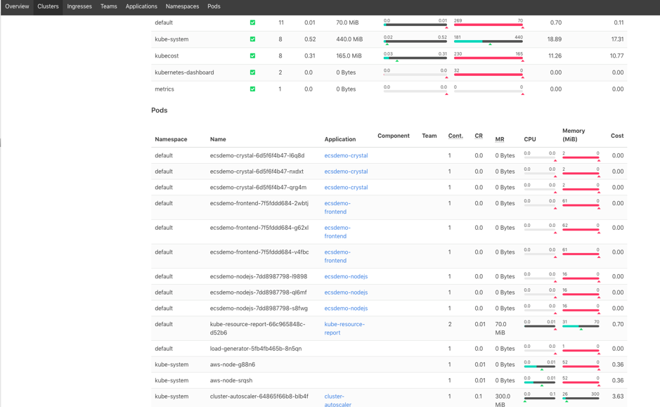

隨時間優化 (Right Sizing)¶
根據 AWS Well-Architected Framework,「Right Sizing」是「使用符合特定工作負載技術規格的最低成本資源」。
當您為 Pod 中的容器指定資源 requests 時,排程器會使用此資訊來決定將 Pod 放置在哪個節點上。當您為容器指定資源 limits 時,kubelet 會強制執行這些限制,以確保正在運行的容器不會使用超過您設定的限制。有關 Kubernetes 如何管理容器資源的詳細資訊,請參閱文件。
在 Kubernetes 中,這意味著設定正確的計算資源 (CPU 和記憶體統稱為計算資源) - 設定資源 requests 盡可能接近實際使用情況。有關獲取 Pod 實際資源使用情況的工具,請參見下面的建議部分。
Amazon EKS on AWS Fargate: 當 Pod 在 Fargate 上排程時,Pod 規格中的 vCPU 和記憶體預留決定了為 Pod 配置多少 CPU 和記憶體。如果您沒有指定 vCPU 和記憶體組合,則使用最小可用組合 (0.25 vCPU 和 0.5 GB 記憶體)。在 Amazon EKS 使用者指南中列出了在 Fargate 上運行的 Pod 可用的 vCPU 和記憶體組合。
Amazon EKS on EC2: 當您建立 Pod 時,您可以指定容器需要多少 CPU 和記憶體等資源。重要的是,我們不要過度配置 (這將導致浪費) 或配置不足 (將導致節流) 分配給容器的資源。
建議¶
使用工具根據觀察到的數據分配資源¶
有工具如 kube resource report 可以幫助調整部署在 Amazon EKS 上 EC2 節點的 Pod 大小。
kube resource report 的部署步驟:
$ git clone https://github.com/hjacobs/kube-resource-report
$ cd kube-resource-report
$ helm install kube-resource-report ./unsupported/chart/kube-resource-report
$ helm status kube-resource-report
$ export POD_NAME=$(kubectl get pods --namespace default -l "app.kubernetes.io/name=kube-resource-report,app.kubernetes.io/instance=kube-resource-report" -o jsonpath="{.items[0].metadata.name}")
$ echo "Visit http://127.0.0.1:8080 to use your application"
$ kubectl port-forward $POD_NAME 8080:8080



FairwindsOps Goldilocks: FairwindsOps Goldilocks 是一個工具,它為命名空間中的每個部署創建一個 Vertical Pod Autoscaler (VPA),然後查詢它們以獲取資訊。VPA 就位後,我們會在 Goldilocks 儀表板上看到建議。
按照文件部署 Vertical Pod Autoscaler。
啟用命名空間 - 選擇一個應用程式命名空間,並將其標記如下,以便看到一些數據,在以下示例中,我們指定 default 命名空間:
查看儀表板 - 默認安裝會為儀表板創建一個 ClusterIP 服務。您可以通過端口轉發訪問:
然後在瀏覽器中打開 http://localhost:8080

使用 CloudWatch Container Insights 和 Amazon CloudWatch 中的 Prometheus 指標進行應用程式分析¶
使用 CloudWatch Container Insights 了解如何使用原生 CloudWatch 功能監控您的 EKS 集群性能。您可以使用 CloudWatch Container Insights 收集、聚合和總結在 Amazon Elastic Kubernetes Service 上運行的容器化應用程式和微服務的指標和日誌。這些指標包括 CPU、記憶體、磁碟和網路等資源的利用率 - 這可以幫助調整 Pod 大小並節省成本。
Container Insights Prometheus Metrics Monitoring 目前,對 Prometheus 指標的支持仍處於測試階段。CloudWatch Container Insights 監控 Prometheus 自動發現容器化系統和工作負載的 Prometheus 指標。Prometheus 是一個開源的系統監控和警報工具包。所有 Prometheus 指標都收集在 ContainerInsights/Prometheus 命名空間中。
cAdvisor 和 kube-state-metrics 提供的指標可用於使用 Prometheus 和 Grafana 監控 Amazon EKS on AWS Fargate 上的 Pod,這可以用於在容器中實施 requests。有關更多詳細資訊,請參閱此博客文章。
Right Size Guide: right size guide (rsg) 是一個簡單的 CLI 工具,可為您的應用程式提供記憶體和 CPU 建議。這個工具適用於多個容器編排器,包括 Kubernetes,部署也很簡單。
通過使用 CloudWatch Container Insights、Kube Resource Report、Goldilocks 和其他工具,在 Kubernetes 集群中運行的應用程式可以進行 right sizing,並可能降低成本。
資源¶
請參考以下資源,了解有關成本優化最佳實踐的更多資訊。
文件和博客¶
- Amazon EKS Workshop - 設置 EKS CloudWatch Container Insights
- 在 Amazon CloudWatch 中使用 Prometheus 指標
- 使用 Prometheus 和 Grafana 監控 Amazon EKS on AWS Fargate